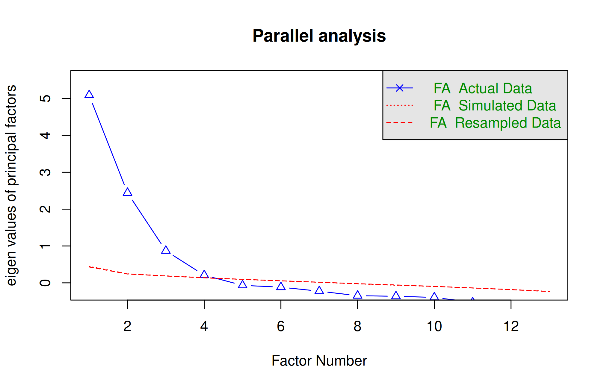
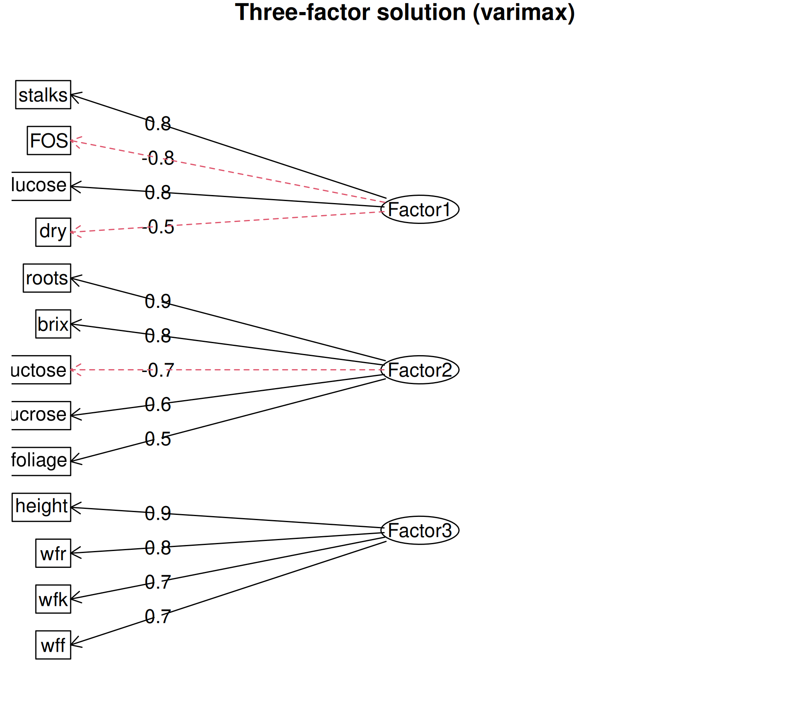

library(agricolae)
data(yacon)
vars <- c("height", "stalks", "wfr", "wff", "wfk", "roots", "FOS",
"glucose", "fructose", "sucrose", "brix", "foliage", "dry")
x <- yacon[, vars]
dim(x)[1] 432 13Explain the common factor model, communalities and uniqueness, check suitability of data, choose the number of factors, fit and rotate a maximum-likelihood factor model and interpret the factors.
Factor analysis (FA) explains the correlations among \(p\) observed variables in terms of a smaller number \(m\) of unobserved (latent) variables called common factors. Where PCA (Chapter 27) is a mathematical rearrangement of the total variance, factor analysis is a statistical model: it assumes that the observed variables are generated by the factors plus variable-specific errors.
For standardised variables \(x_1, \ldots, x_p\),
\[x_i = \lambda_{i1} F_1 + \lambda_{i2} F_2 + \cdots + \lambda_{im} F_m + \varepsilon_i, \qquad i = 1, \ldots, p\]
where
The variance of each standardised variable splits into
\[1 = \underbrace{\lambda_{i1}^2 + \cdots + \lambda_{im}^2}_{\text{communality } h_i^2} + \psi_i\]
The communality \(h_i^2\) is the part of the variance of \(x_i\) shared with the other variables through the common factors.
| PCA | Factor analysis | |
|---|---|---|
| Aim | summarise total variance | explain correlations (common variance) |
| Model | none; exact transformation | \(x = \Lambda F + \varepsilon\) |
| Components / factors | linear combinations of the variables | latent variables generating the variables |
| Unique variance | included in components | separated as \(\psi_i\) |
The yacon data in agricolae record 13 traits on yacon (Smallanthus sonchifolius) plants of eight entries at three localities in Peru: plant height, number of stalks, fresh weights of roots (wfr), foliage (wff) and crown (wfk), dry matter of roots (roots), foliage and crown (dry), and the contents of fructo-oligosaccharides (FOS), glucose, fructose and sucrose (%) and degrees Brix. Can the correlations among these traits be explained by a few underlying factors?
library(agricolae)
data(yacon)
vars <- c("height", "stalks", "wfr", "wff", "wfk", "roots", "FOS",
"glucose", "fructose", "sucrose", "brix", "foliage", "dry")
x <- yacon[, vars]
dim(x)[1] 432 13Bartlett’s test of sphericity tests whether the correlation matrix is an identity matrix (no correlations at all). The Kaiser–Meyer–Olkin (KMO) measure of sampling adequacy compares correlations with partial correlations; values above 0.6 are considered adequate and above 0.8 good.
library(psych)
cortest.bartlett(cor(x), n = nrow(x))$chisq
[1] 5481
$p.value
[1] 0
$df
[1] 78KMO(x)Kaiser-Meyer-Olkin factor adequacy
Call: KMO(r = x)
Overall MSA = 0.83
MSA for each item =
height stalks wfr wff wfk roots FOS glucose
0.78 0.80 0.80 0.90 0.83 0.77 0.80 0.87
fructose sucrose brix foliage dry
0.85 0.79 0.83 0.95 0.73 Bartlett’s test is highly significant and the overall KMO is 0.83, so the data are suitable for factor analysis.
Parallel analysis compares the eigenvalues of the data with those of random data of the same size; factors are retained while the observed eigenvalue exceeds the random one.
set.seed(531)
fa.parallel(x, fa = "fa", n.iter = 50, main = "Parallel analysis")
Parallel analysis suggests that the number of factors = 4 and the number of components = NA Parallel analysis suggests three or four factors. We first fit three factors for an easily interpreted solution.
factanal() (base R) fits the model by maximum likelihood. A varimax rotation keeps the factors uncorrelated while making each variable load highly on as few factors as possible.
fa3 <- factanal(x, factors = 3, rotation = "varimax", scores = "regression")
print(fa3$loadings, cutoff = 0.4, sort = TRUE)
Loadings:
Factor1 Factor2 Factor3
stalks 0.844
FOS -0.802 0.413
glucose 0.762 -0.458
dry -0.514
roots 0.913
fructose 0.499 -0.720
sucrose 0.614
brix -0.516 0.795
foliage 0.536
height 0.895
wfr 0.848
wff 0.453 0.703
wfk 0.749
Factor1 Factor2 Factor3
SS loadings 3.169 3.141 3.088
Proportion Var 0.244 0.242 0.238
Cumulative Var 0.244 0.485 0.723Loadings below 0.4 are hidden to make the pattern clear. The three factors together explain 72% of the total variance.
round(data.frame(communality = 1 - fa3$uniquenesses,
uniqueness = fa3$uniquenesses), 2) communality uniqueness
height 0.80 0.20
stalks 0.75 0.25
wfr 0.79 0.21
wff 0.71 0.29
wfk 0.65 0.35
roots 0.96 0.04
FOS 0.90 0.10
glucose 0.80 0.20
fructose 0.87 0.13
sucrose 0.39 0.61
brix 0.92 0.08
foliage 0.54 0.46
dry 0.30 0.70Most traits have high communalities; sucrose, foliage dry matter and crown dry matter have the most specific (unique) variance.
fa.diagram(fa3$loadings, main = "Three-factor solution (varimax)")
factanal() also tests whether \(m\) factors are sufficient:
c(chi_square = unname(fa3$STATISTIC), df = unname(fa3$dof), p_value = fa3$PVAL) chi_square df p_value.objective
6.534e+02 4.200e+01 1.093e-110 The test rejects the three-factor model. With 432 observations the test is very sensitive, and it rejects even the four-factor model; in practice the number of factors is chosen for interpretability and from parallel analysis rather than from this test alone.
Factor scores estimate the value of each factor for each plant and can be used in further analysis, for example to compare localities:
scores <- as.data.frame(fa3$scores)
loc_scores <- aggregate(scores, by = list(locality = yacon$locality), FUN = mean)
loc_scores[, -1] <- round(loc_scores[, -1], 2)
loc_scores locality Factor1 Factor2 Factor3
1 CAJ -0.16 0.04 -0.86
2 LIM 0.96 -0.41 0.69
3 OXA -0.80 0.37 0.17Plants at Lima score high on Factor 1 (more simple sugars, less FOS) and on fresh biomass (Factor 3); plants at Oxapampa are the richest in FOS; plants at Cajamarca have the lowest fresh biomass.
If the factors are expected to be correlated, an oblique rotation such as promax allows it. The fa() function of psych reports the factor correlations:
fa3p <- fa(x, nfactors = 3, rotate = "promax", fm = "ml")Loading required namespace: GPArotationprint(fa3p$loadings, cutoff = 0.4, sort = TRUE)
Loadings:
ML3 ML1 ML2
stalks 0.978
FOS -0.809
glucose 0.735
dry -0.567
roots 1.059
fructose -0.661
sucrose 0.698
brix 0.739
height 0.900
wfr 0.867
wff 0.477 0.675
wfk 0.734
foliage 0.488
ML3 ML1 ML2
SS loadings 3.091 3.017 3.082
Proportion Var 0.238 0.232 0.237
Cumulative Var 0.238 0.470 0.707round(fa3p$Phi, 2) # correlations between the factors ML3 ML1 ML2
ML3 1.00 -0.63 0.10
ML1 -0.63 1.00 -0.07
ML2 0.10 -0.07 1.00The pattern of loadings is very similar to the varimax solution. With an oblique rotation the loadings are regression weights rather than correlations, so a value slightly above 1 (as for roots) can occur. The sugar-composition and dry-matter factors are fairly strongly correlated (about −0.63), which suggests that an oblique solution describes these traits more faithfully than an orthogonal one.
Factor analysis of ability tests
Edit the code, then select Run R. The first run downloads R into your browser and may take a little time. Copy code lets you use the example in RStudio.
# Covariances of six ability tests on 112 people (built-in data set)
fa2 <- factanal(factors = 2, covmat = ability.cov, rotation = "varimax")
print(fa2$loadings, cutoff = 0.3)
round(1 - fa2$uniquenesses, 2) # communalities
fa2$PVAL # is two factors enough?Investigate. Name the two factors from the tests that load on them. Then fit one factor (factors = 1) and compare the goodness-of-fit p-value.
ability.cov data set (six ability tests on 112 people; use factanal(factors = 2, covmat = ability.cov)) and name the factors.Charles Spearman introduced factor analysis in 1904 to explain the correlations among school examination marks by a single general factor of intelligence.
Answers are given at the end of the chapter.
factanal() estimates the loadings by maximum __________.Answers are given at the end of the chapter.
Common factor model:
\[ x_i = \lambda_{i1}F_1 + \cdots + \lambda_{im}F_m + \varepsilon_i \tag{28.1}\]
Communality and uniqueness of a standardised variable:
\[ h_i^2 = \sum_{j=1}^m \lambda_{ij}^2, \qquad \psi_i = 1 - h_i^2 \tag{28.2}\]
1. common 2. communality 3. uniqueness 4. KMO 5. random 6. orthogonal 7. oblique 8. likelihood